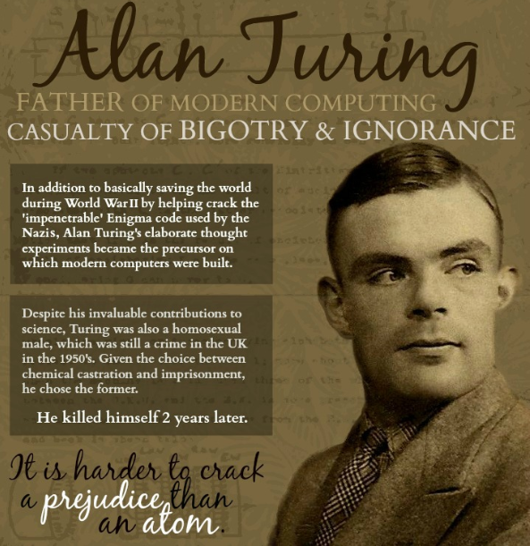

Introduction
Alan Mathison Turing (23 June 1912 – 7 June 1954) was an English computer scientist, mathematician, logician, cryptanalyst, philosopher, and theoretical biologist.Turing was highly influential in the development of theoretical computer science, providing a formalisation of the concepts of algorithm and computation with the Turing machine, which can be considered a model of a general purpose computer.[7][8][9] Turing is widely considered to be the father of theoretical computer science and artificial intelligence.
Early Life
Turing was born in Maida Vale, London,while his father, Julius Mathison Turing (1873–1947), was on leave from his position with the Indian Civil Service (ICS) at Chhatrapur, Bihar and Orissa Province, in British India.Turing's father was the son of a clergyman, the Rev. John Robert Turing, from a Scottish family of merchants that had been based in the Netherlands and included a baronet. Turing's mother, Julius' wife, was Ethel Sara Turing (née Stoney 1881–1976),daughter of Edward Waller Stoney, chief engineer of the Madras Railways. The Stoneys were a Protestant Anglo-Irish gentry family from both County Tipperary and County Longford, while Ethel herself had spent much of her childhood in County Clare.
The Enigma Problem
Turing decided to tackle the particularly difficult problem of German naval Enigma "because no one else was doing anything about it and I could have it to myself".[83] In December 1939, Turing solved the essential part of the naval indicator system, which was more complex than the indicator systems used by the other services.That same night, he also conceived of the idea of Banburismus, a sequential statistical technique (what Abraham Wald later called sequential analysis) to assist in breaking the naval Enigma.
Useful Links
Wikipedia